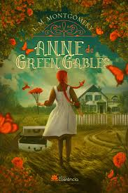

Percy Jackson
Twelve-year-old Percy Jackson is on the most dangerous quest of his life. With the help of a satyr and a daughter of Athena, Percy must journey across the United States to catch a thief who has stolen the original weapon of mass destruction — Zeus' master bolt.
Throne of Glasses
Throne of Glass is about an eighteen year old girl named Celaena Sardothien. Celaena is a trained assassin who is serving a life sentence for killing hundreds of people. One day Celaena gets offered a deal by young Captain Westfall: her freedom in return for a huge sacrifice.
Harry Potter

It is a story about Harry Potter, an orphan brought up by his aunt and uncle because his parents were killed when he was a baby. Harry is unloved by his uncle and aunt but everything changes when he is invited to join Hogwarts School of Witchcraft and Wizardry and he finds out he's a wizard.
Darkest Minds
When teens mysteriously develop powerful new abilities, they are declared a threat by the government and detained. One of the most powerful young people, Ruby, escapes from her camp and joins a group of runaways who are seeking a safe haven.
Anne of Green Gables
Anne of Green Gables, children's novel by Canadian author Lucy Maud Montgomery, published in 1908. The work, a sentimental but charming coming-of-age story about a spirited and unconventional orphan girl who finds a home with elderly siblings, became a classic of children's literature and led to several sequels.